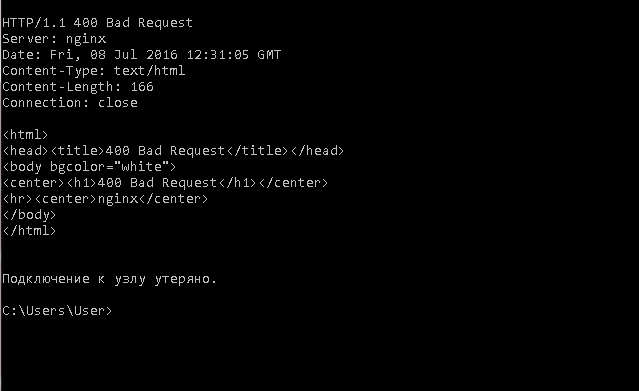

2.
User-Agent - Назва та версія пристрою користувача
Accept - який тип документа очікується від сервера
3.
HTTP 1.1 то розширення до HTTP 1.0. там добавили компресію, субдоменність, в старому протоколі якщо не надіслати заголовок Сonection: Кeep Alive, то після пакету, передачі конект обривається, в 1.1 по замовчуванню конект не обривається поки його не закриє сервер або клієнт.
GET - данні які передаються в URLстрічці, обмежені максимальною довжиною стрічки, передаються в відкритому вигляді, GET передають адреси сторінок, айдішки, ключі різні для використання в навігації і т.д.
POST - дані передаються в тілі, вони захайдені, і в обємі обмежуються настройками сервера, POST передають паролі і логіни, данні форм, файли великих розмірів і т.д.
ще знаю DELETE - запрос на стирання данних
4.
Telnet в віндовсі працює так собі))


5.
Нетворк це вкладка де можна виставляти різну швидкість загрузки сторінки, дивитись з якою швидкістю проходять запити, що віддає сервак, проаналізувати хедери, файли які загружаются, з якою швидкістю і якого розміру.
6.


7.
метод HEAD то саме що GET, тільки сервер вертає тільки хедер без боді...
8.
Будь-який сайт який має форму логування чи відправки повідомлення...
vk.com,
facebook,
tickets.ua,
nnm.ru,
youtube.com
9.